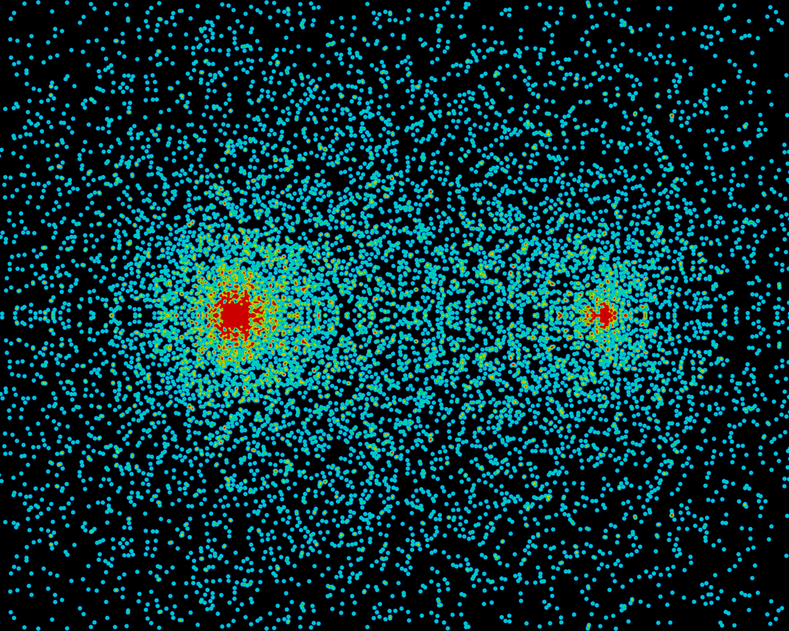
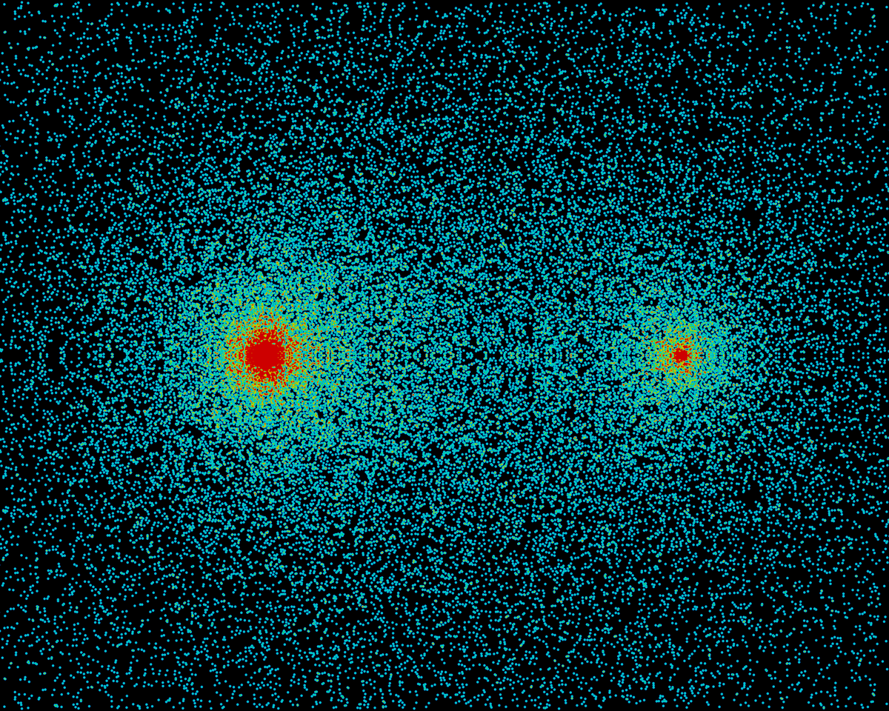
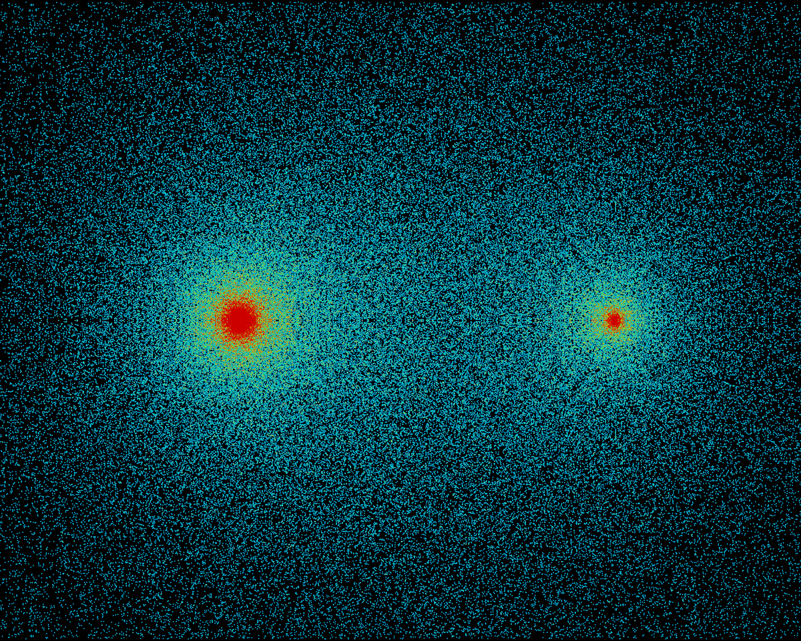
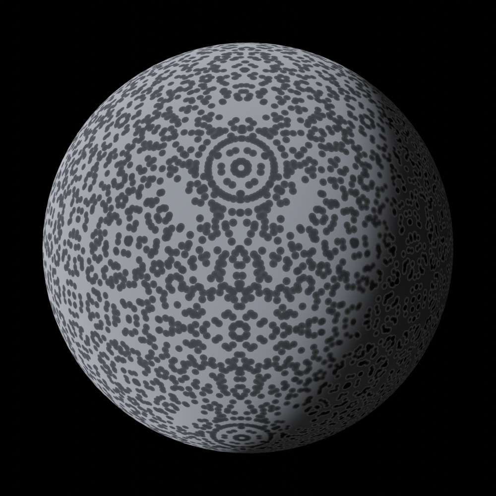
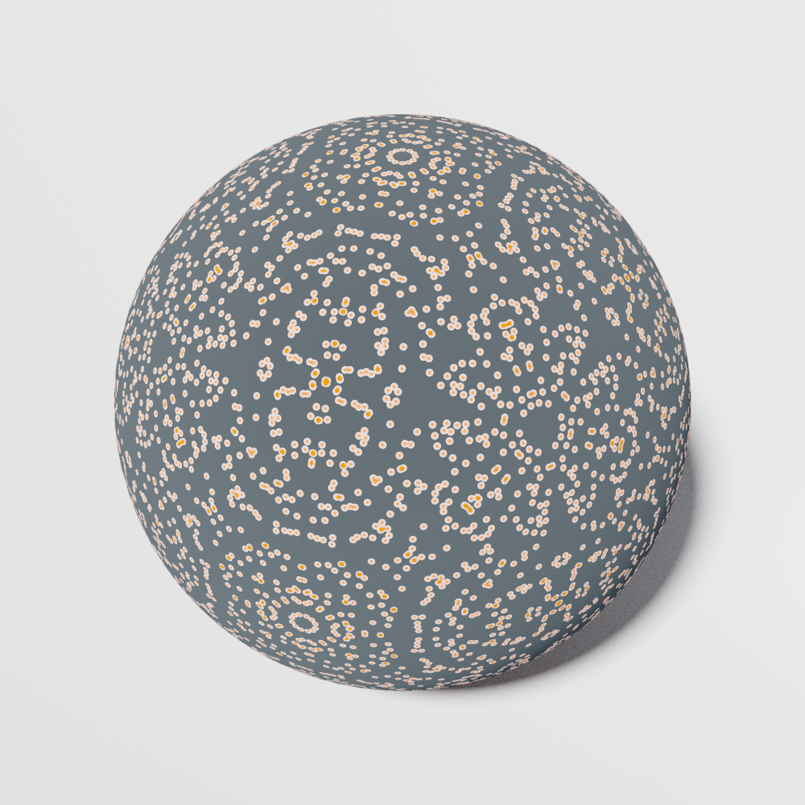
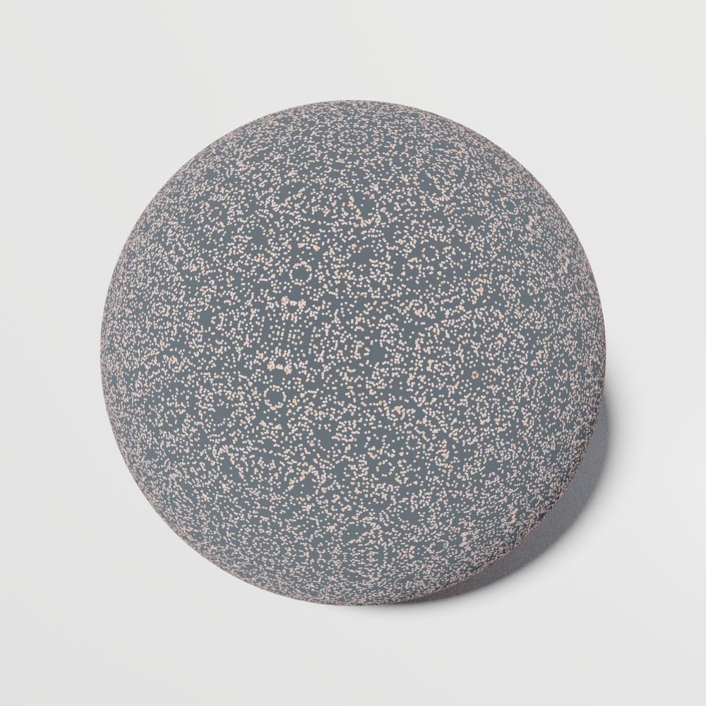

Juan Rivera-Letelier
Mathematician
Notes
Gallery
Singular moduli

Discriminant -2^35

Discriminant -2^37

Discriminant -2^43
Integer points on spheres

Square radius 226686

Square radius 3524578

Square radius 63245986
Links
Research
Undergrads